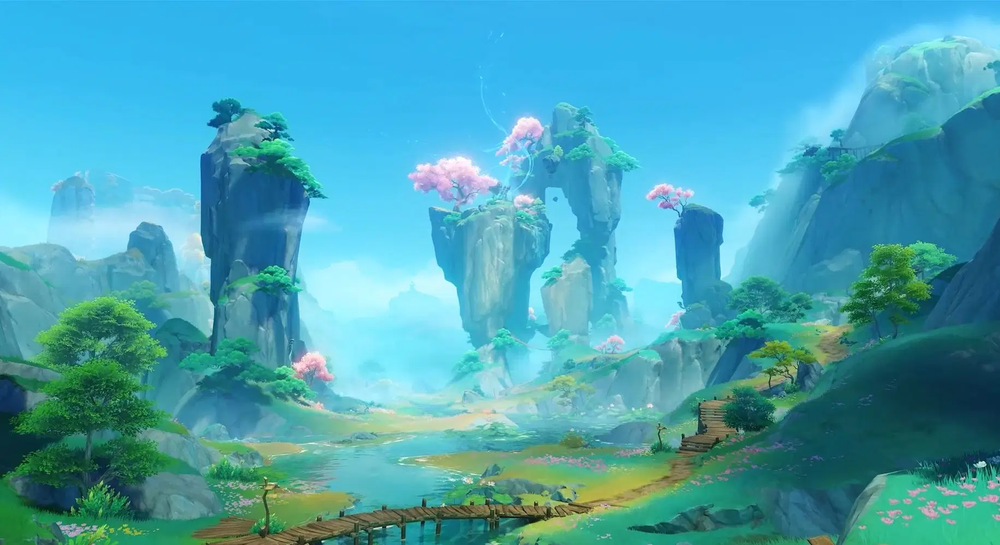
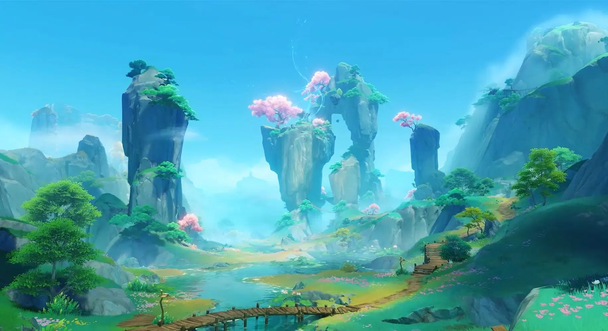

Aether
The Traveler from Teyvat, searching for their sibling. He wields the Anemo and Geo elements, and is known for his versatility and strong will.

Venti
Venti is the Anemo Archon of Mondstadt, the playful and carefree bard of the city. As the wind god, Venti is often seen in the form of a young, cheerful person who loves drinking wine and singing songs. Though his true identity as Barbatos, the god of freedom, is hidden, Venti’s love for freedom and the people of Mondstadt is unwavering.

Diluc
Diluc Ragnvindr is the owner of the Dawn Winery and one of Mondstadt's wealthiest and most influential figures. A skilled Pyro user, he is known as the Darknight Hero, a vigilante who fights for justice in Mondstadt's shadows.

Kaeya
Kaeya Alberich is the Cavalry Captain of Mondstadt’s Knights of Favonius. Known for his wit and charisma, he is a Cryo element user and an expert swordsman.

Lisa
Lisa Minci is a 4-star character in Genshin Impact and one of the main characters from the Mondstadt region. She is known as the Head Librarian of the Knights of Favonius, as well as a supporting character and a powerful mage who wields Electro abilities. Lisa's personality, lore, and skills make her an intriguing and beloved character in the game.

Jean
Jean Gunnhildr is the Acting Grand Master of the Knights of Favonius in Mondstadt. She is a strong and reliable character known for her leadership and determination. Jean hails from the prestigious Gunnhildr Clan, a family deeply tied to the defense of Mondstadt. She wields the Anemo (Wind) element and uses a Sword as her weapon, making her a versatile and fast character on the battlefield.

Arlecchino
Arlecchino is a character in Genshin Impact, part of the Fatui, one of the game's antagonistic factions. She is known as one of the Harbingers—the highest-ranking members of the Fatui, an organization that often acts with political ambition, using underhanded methods to achieve their goals. Though not much is revealed about her in the main storyline as of now, Arlecchino has been hinted at through various lore, especially tied to the Fatui and their workings in Snezhnaya (her homeland). Arlecchino is part of the Tartaglia's (Childe’s) storyline and is mentioned in various pieces of Genshin lore, suggesting her significance within the Fatui hierarchy.